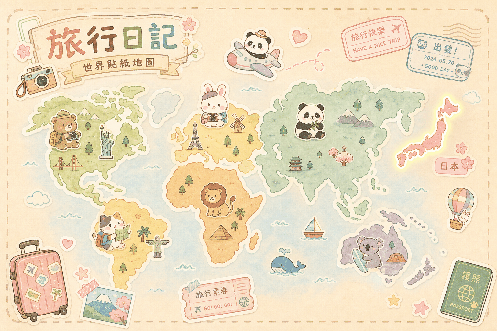

START FROM JAPAN
目前開放的目的地
日本頁已整理成城市地圖，可從東京進入七月、八月與下一次行程；未來新增國家也會以同樣方式收藏。
TRAVEL TOOLKIT
旅行手帳工具
把交通、地圖與周邊指南做成可快速查閱的卡片，旅途中手機打開就能用。
KAWAII WORLD TRAVEL MAP

日本JAPAN · OPEN紅色亮點為已建立行程的國家 · 其他地區陸續收藏中
START FROM JAPAN
日本頁已整理成城市地圖，可從東京進入七月、八月與下一次行程；未來新增國家也會以同樣方式收藏。
TRAVEL TOOLKIT
把交通、地圖與周邊指南做成可快速查閱的卡片，旅途中手機打開就能用。